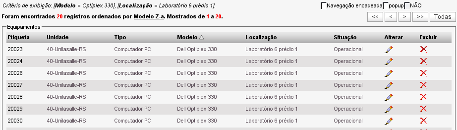

Visualizar equipamentos (Inventário -> Visualizar -> Equipamentos)
Através dessa opção é possível ter a listagem completa de equipamentos cadastrados no sistema.

Tela de visualização da listagem de equipamentos cadastrados - versão 2.0rc3
Todas as informações exibidas aparecem em forma de link e podem ser filtradas apenas clicando sobre o link desejado.
Número da etiqueta: a primeira coluna da listagem de equipamentos exibe o número das etiquetas dos equipamentos. Ao clicar em um dos números serão exibidos os detalhes do respectivo equipamento.
Unidade: ao clicar em um das unidades exibidas nessa coluna, a listagem irá filtrar para apenas equipamento com a unidade que foi clicada.
Tipo: ao clicar em um dos tipos de equipamentos, a listagem será filtrada para exibir apenas equipamentos do tipo clicado.
Modelo: ao clicar em um dos modelos listados, a listagem será filtrada para exibir apenas equipamentos do modelo clicado.
Localização: ao clicar em um dos locais listados, a listagem será filtrada para exibir apenas equipamentos com a localização clicada.
Situação: ao clicar em uma das situações listadas, a listagem será filtrada para exibir apenas equipamentos com a situação clicada.
Filtros encadeados:
É possível a utilização de filtros de forma encadeada, ou seja, cada filtro é aplicado sem perder o filtro anterior. Para isso ocorrer, basta marcar a opção "Navegação encadeada" no topo direito da tela.
Outras opções:
- Checkbox popup: essa opção servia para visualizar os detalhes dos equipamentos (ao clicar no número da etiqueta) em uma janela popup. Na versão mais atual, os detalhes dos equipamentos são exibidos em um frame dentro da mesma página da listagem.
- Checkbox NÃO: essa opção não possui função implementada (até a versão 2.0rc3). A intenção é criar uma função de navegação exclusiva, assim como a utilização da navegação encadeada, porém negando o item clicado.
A opção de exclusão de equipamento só fica visível para operadores com nível de administrador do sistema.